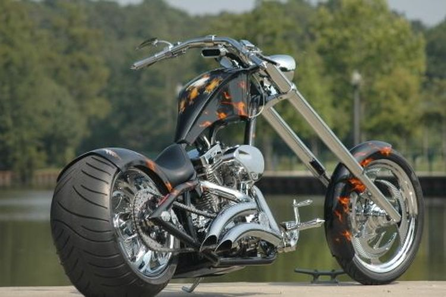

CHOPPER
Choppers are motorbikes that use a rigid frame and are "chopped" (chop) to lengthen the front fork and often feature high curved handlebars as their trademark. Chopper really prioritizes the appearance of the motorbike and the character of the rider. Choppers also have advantages in terms of engine performance. Usually, builders apart from completely changing the appearance of the motorbike, they also re-tune the motorbike's engine performance.
